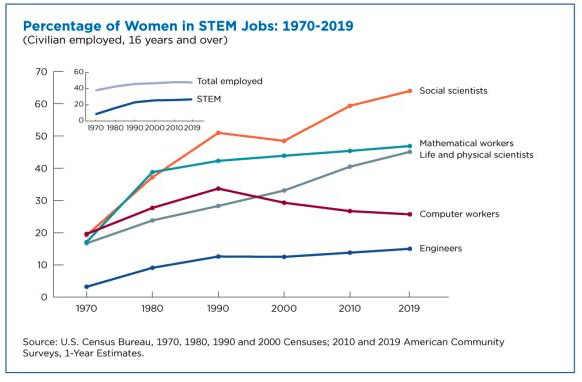

Unlike other STEM fields, since 1990, the number of women in computer occupations has been falling in 2019 less than 20% of computer workers were female1. My first experience with computational research was during undergrad at Skidmore College. Skidmore used to be a women’s college, and women still make up about 60% of each class. This meant that my upper-level chemistry courses were predominately female, and my lab had only female students for a couple years. At the time I didn’t appreciate the novelty or benefits of such an environment, but I miss it now.
At Pitt, I am a second-year graduate student in the CMU-Pitt Computational Biology Program (CPCB), and my program like essentially all computational PhD programs is dominated by male students. This downward trend of women in computational occupations and the horrendous lack of racial diversity needs to change, but that is not what I want to talk about.
During research seminars, I (virtually) look around and see relatively few women, but every working group, committee, or assembly I attend looks more like my undergraduate lab than my PhD program. For example, the CPCB Graduate Student Assembly president has been a female student for the past 5 years, and currently, the rest of the members are 2/3 female. I co-chair a committee which along with 4 faculty has 6 students, one male. A group of SOM graduate students has spent the past several months preparing materials to update our ethics course. This group again has 6 students, including me, and only one male. I am also a graduate student advisor to the Research Experience for Undergraduates (REU) that takes place in my department, and most other students who volunteer are female. Peek at the newsletter committee for BGSA, it follows the trend. The extra, unpaid, and generally underappreciated work appears to be disproportionately falling to female students who are already the minority.
I believe that all the not-research I do has value. I was a student in the REU in my department, and the graduate students who I interreacted with are a big reason I decided to pursue a PhD. Student government allows me to advocate for change within my program, and it is also fun to plan events that we get to attend. The first year SOM graduate ethics course is incredibly outdated. It does not talk about the importance of creating and maintaining a diverse, equitable, and inclusive research environment, nor does it have any mention of computational research.
My goal in writing this is not to encourage male students to volunteer, though please do if you feel inclined. The goal is simply to point out how this disparity contradicts with the disparity of the field and aligns with the knowledge that women to an outsized proportion of the world’s unpaid labor2. Since neither my program nor the School of Medicine appear to value the work they keep asking volunteers to do, I am only going to do what I find personally rewarding, and I encourage you to do the same.
1. Anthony Martinez and Cheridan Christnacht. “Women are Nearly half of U.S. Workforce but only 27% of STEM Workers.” United States Census Bureau. 2021. 2. Asi, Yara, and Cynthia Williams. "A woman's (unpaid) work: Global perspectives on gender, healthcare, and caregiving." Three Facets of Public Health and Paths to Improvements. Academic Press, 2020. 261-294.
Leave a comment